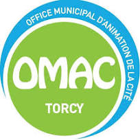

OMAC
OMAC est l’Office Municipal d’Animation de la Cité. Mon stage a porté sur deux volets : la création d’un site web avec WordPress et la maintenance du parc informatique. J’ai travaillé à la fois sur la partie design (UX/UI) et sur les aspects techniques de l’environnement de travail.
- Mission 1 – Site WordPress : Design UX/UI, intégration de contenu, SEO, sécurité et performance
- Mission 2 – Maintenance PC : Dépannage, mises à jour, gestion des pilotes, sauvegardes, déploiement d'une app de gestion des appels
- Technologies : WordPress, HTML/CSS, outils SEO, outils de maintenance système
- Compétences développées : CMS, optimisation web, ergonomie, support technique, déploiement logiciel
